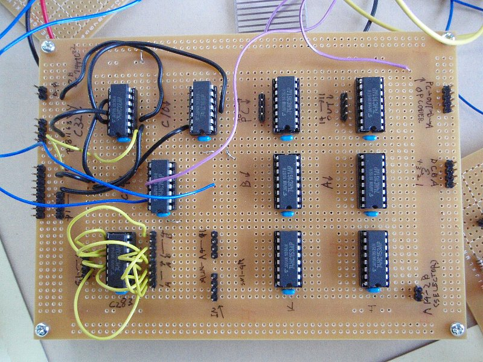

カテゴリ: 読書
- [ Prev ]
- [ Next ]
- [ 読書メモ/「CPUの創りかた」 ]
いよいよ動作確認です。
説明する内容は無いので、LEDが光ってる＝動いてるっぽい感じのする写真を並べて紹介するだけになっちゃいました。
最後に、各モジュールの（ぴんぼけしてない）写真と、使用した工具や配線材を紹介して終わりです。
動作確認・完成！
最初に命令デコーダの動作確認です。レジスタLOAD0-3をOUTポート用のLEDにつなげ、SELECTA-Bはアドレス確認用のLEDに接続、最後にDIPSW4bit信号をDATA4-7に接続します。
あとはDIPSWをポチポチして、clockを与えれば、LEDの点灯で各ラインのH/Lを確認できます。
次がALUです。DIPSW8bit信号をそのままALUへの入力ABに接続、ALUの加算結果をOUTポート用のLEDにつなげて、簡単に加算結果を確認できます。これは単にICが壊れてないかと結線の確認だけ、って感じですね。
桁上がりのキャリー信号はテスタを当てて直接電圧を見て確認してます。
レジスタの確認に進みます。DIPSW4bit分をLOAD0-3ラインに接続、もう半分の4bitをレジスタへのデータラインに接続します。命令デコーダによるLOAD0-3ラインとALUの結果を、DIPSWを使って仮想的に与えて確認してきます。
レジスタD(=PCレジスタ)の確認です。DIPこれはA0-3ラインをそのままアドレス目視用のLEDに接続し、clock信号のスイッチをポチポチ押してみて確認できます。ただ、ちゃんと1ずつ増えてるかは確認できませんでした。なんか不安定。まぁぶっちゃけ、人力ROMなんでPCは使わないのでどうでも良かったりしますwww
レジスタC(=OUTポート)の確認です。出力ポートを適当なLED4組セットに接続し、DIPSW使って確認していきます。
レジスタA,Bについては、入力ポート用のDIPSWをSELECT信号として与えて確認してます。
このあたりの動作確認が一番面白かったです。モジュールごとに動かしていたので、入力と論理回路の組み合わ
で出力が定まる様子を細かく観察できました。
コングラッチュレーション・・・おめでとう・・・！！
ただまぁ、人力ROMにしたので当然なんですが、JMPやJNC命令は使えませんwwww
いや、動くんですけど、意味が無いwww
DIPSW切り替えてCLOCKボタンをポチッ、それを手動で一命令ごとに繰り返すわけですから、PCの値ガン無視wwww
まぁこれはこれで、面白いですけど。
各モジュールの完成写真
今までの日記にUPしてたのはピンボケばっかりでした。今日、ようやくデジカメに「マクロ撮影」なる機能があるのを発見しました。これを使えば至近距離でもピントを合わせられる。
ということで、改めて各モジュールの完成写真を紹介します。
レジスタ, ALU, 命令デコーダ（表）：

工具、配線材の紹介
上段左から順：
- ワイヤストリッパ（細線用）: PA-14
- ピンセット
- 圧着ペンチ : PA-09
- ワイヤストリッパ（中太線用） : P-951
- 半田こて台
- 単芯線（細線）: AWG26
- 半田ごて(30W) : CXR-40
下段左から順：
- ニッパー
- アナログテスタ
- ラジオペンチ
今回、モジュール間をコンタクトピンによるフラットケーブルで接続しています。コンタクトピンの各ラインをピンに固定するのに圧着ペンチが必要です。
数も必要で時間がとられますし、圧着ペンチも安くはありません(写真のPA-09は3,000円台)。動作確認で紹介した写真で、電源の赤黒線を半田付けしている縞模様の基盤がばら売りされてますので、アドレス線・データ線・命令デコーダとレジスタ群の結線部分など、それを使って済ませても良いかもしれません。動作確認時、線をつなぎかえるたびに半田付けが必要ですが・・・。
続いて配線材です。今回使用した配線材です：

単芯細線が非常に便利です。
最後に、コンタクトピンを使ったフラットケーブルです。これ、全部圧着ペンチ使って自分で作りました。結構時間取られます。

お値段
圧着ペンチやワイヤーストリッパーなど、お値段高めの工具も込みで、今回千石電商につぎ込んだ金額は・・・
14,520円
でした。
半田ごてや配線材のいくつか、あと何気に基盤については手持ちの予備を使ってます。
もしそれらも込みで全部揃えるとなると、他の製作経験者のHPでも書かれていますが、2-3万円、というところでしょうか。
最後、後書きや感想はまた別エントリでUPします。
- [ Prev ]
- [ Next ]
- [ Up ]
- [ 読書メモ/「CPUの創りかた」 ]